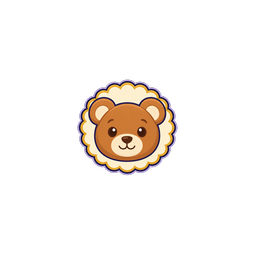

256px review file

Native generator originals preserved unchanged. Uniform1254-square whole-canvas resize to175-square and centered transparent padding to256-square; no crop, mask, warp, subject editing or copied reference pixels. Existing sign node scale/position/depth were reused only in the diagnostic fit.
Whole-canvas provenanceDraft only; original and runtime binding unchanged.